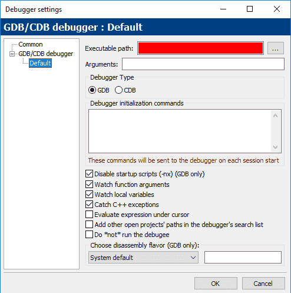
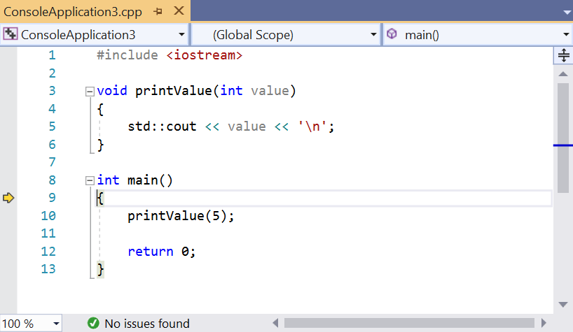
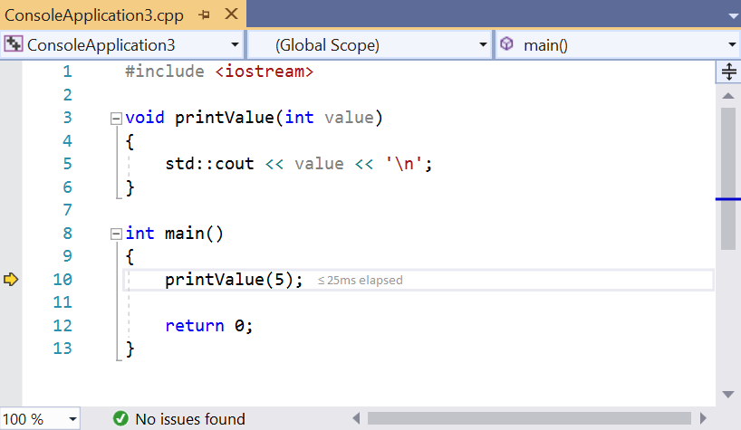
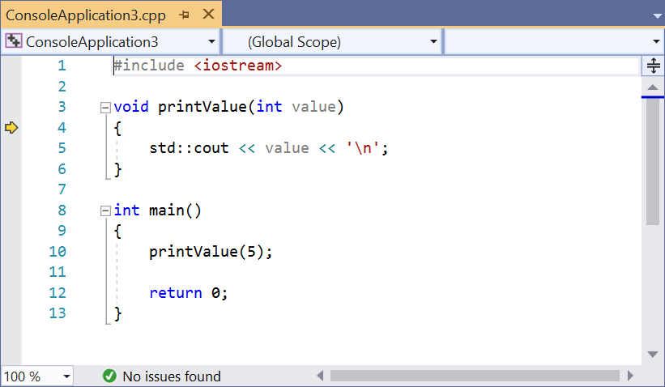
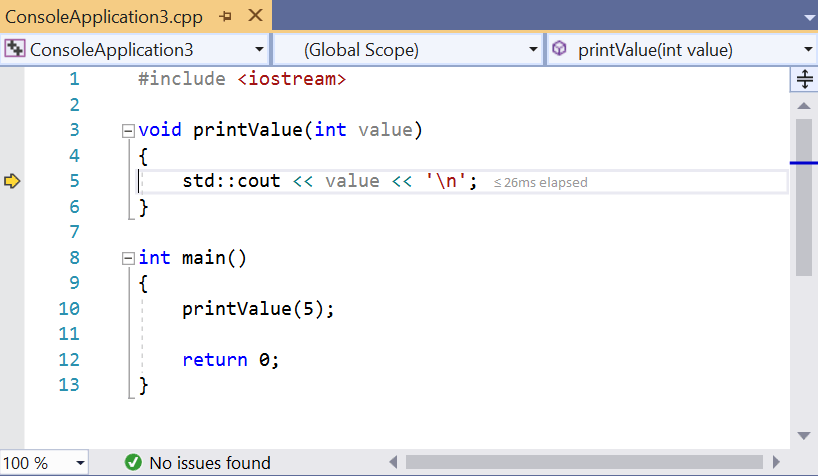

3.6 — 使用集成调试器：单步执行
当您运行程序时，执行从 main 函数的顶部开始，然后按语句顺序依次执行，直到程序结束。在程序运行的任何时刻，程序会跟踪很多事情：正在使用的变量的值，哪些函数被调用（这样当这些函数返回时，程序知道回到哪里），以及程序中的当前执行点（以便知道下一步执行哪条语句）。所有这些被跟踪的信息被称为您的程序状态（program state）（或简称状态state）。 程序状态 （或简称 状态，简称）。
在之前的课程中，我们探讨了多种修改代码以帮助调试的方法，包括打印诊断信息或使用记录器。这些是在程序运行时检查程序状态的简单方法。虽然如果正确使用它们可以很有效，但它们仍有缺点：它们需要修改代码，这很耗时且可能引入新bug，并且它们会使代码杂乱，使现有代码更难理解。
到目前为止我们所展示的技术背后有一个未说明的假设：一旦我们运行代码，它将一直运行到结束（仅在接受输入时暂停），我们无法在任意时刻干预并检查程序的结果。
然而，如果我们能够消除这个假设呢？幸运的是，大多数现代IDE都附带了一个名为调试器的集成工具，正是为此而设计的。
调试器
一个 调试器 是一种计算机程序，允许程序员控制另一个程序的执行方式，并在该程序运行时检查程序状态。例如，程序员可以使用调试器逐行执行程序，同时检查变量的值。通过将变量的实际值与预期值进行比较，或者观察代码的执行路径，调试器可以极大地帮助追踪语义（逻辑）错误。
调试器背后的能力是双重的：精确控制程序执行的能力，以及查看（如果需要，还可以修改）程序状态的能力。
最初，调试器（例如 gdb）是独立的程序，具有命令行界面，程序员必须输入晦涩的命令才能使用它们。后来的调试器（如早期版本的Borland's turbo debugger）仍然是独立的程序，但提供了“图形”前端以方便使用。如今，许多现代IDE都有一个 集成调试器 ——即，一个使用与代码编辑器相同界面的调试器，这样你就可以使用编写代码的同一环境进行调试（而无需切换程序）。
尽管集成调试器非常方便，对初学者来说也是推荐使用的，但命令行调试器也得到很好的支持，并且仍然常用于不支持图形界面的环境（例如嵌入式系统）。
几乎所有现代调试器都包含相同的标准基本功能——然而，在访问这些功能的菜单布局方面却缺乏一致性，键盘快捷键的一致性就更差了。尽管我们的示例将使用来自Microsoft Visual Studio的截图（我们也会介绍如何在Code::Blocks中完成所有操作），但无论你使用哪种IDE，都应该不难找到我们所讨论的每个功能的访问方式。
提示
调试器的键盘快捷键仅在IDE/集成调试器是活动窗口时才有效。
本章剩余部分将用于学习如何使用调试器。
提示
不要忽视学习使用调试器。随着你的程序变得越来越复杂，你花在有效使用集成调试器上的时间将远少于你通过查找和修复问题所节省的时间。
警告
在继续本课（以及后续与使用调试器相关的课程）之前，请确保你的项目使用调试构建配置进行编译（请参阅 0.9 -- 配置编译器：构建配置 以了解更多信息）。
如果你改用发布配置编译项目，调试器的功能可能无法正常工作（例如，当你尝试单步执行程序时，它只会运行程序而不是逐步调试）。
对于 Code::Blocks 用户
如果你使用Code::Blocks，你的调试器可能设置正确，也可能不正确。让我们检查一下。
首先，转到 设置菜单 > 调试器…。接下来，打开 GDB/CDB调试器 左侧的树形结构，然后选择 默认。一个看起来像这样的对话框应该会打开：

如果你在“可执行文件路径”处看到一条大的红色条，那么你需要找到你的调试器。为此，请点击 … 按钮，位于 可执行文件路径 字段。接下来，在你的系统上找到“gdb32.exe”文件——我的位于 C:\Program Files (x86)\CodeBlocks\MinGW\bin\gdb32.exe。然后点击 OK。
对于 Code::Blocks 用户
有报告称，Code::Blocks 集成的调试器（GDB）在识别包含空格或非英文字符的文件路径时可能会出现问题。如果在学习这些课程过程中调试器似乎出现故障，那可能是原因之一。
对于 VS Code 用户
要设置调试，请按下 Ctrl+Shift+P 并选择“C/C++: Add Debug Configuration”，接着选择“C/C++: g++ build and debug active file”。这应该会创建并打开 launch.json 配置文件。将“stopAtEntry”改为 true："stopAtEntry": true,
然后打开 main.cpp 并通过按下 F5 或按下 Ctrl+Shift+P 并选择“Debug: Start Debugging and Stop on Entry”来开始调试。
单步执行
我们首先要检查一些允许我们控制程序执行方式的调试工具，以此来开始探索调试器。
单步执行 是一组相关调试器功能的名称，它允许我们逐条语句地执行（单步执行）代码。
我们将依次介绍几个相关的单步执行命令。
步入
浮点类型的 步入 命令执行程序正常执行路径中的下一条语句，然后暂停程序的执行，以便我们可以使用调试器检查程序的状态。如果正在执行的语句包含函数调用， 步入 导致程序跳转到被调用函数的顶部，并在那里暂停。
让我们来看一个非常简单的程序：
#include <iostream>
void printValue(int value)
{
std::cout << value << '\n';
}
int main()
{
printValue(5);
return 0;
}
让我们使用 步入 命令。
首先，找到并执行 步入 调试命令一次。
适用于 Visual Studio 用户
在Visual Studio中， 步入 命令可以通过 调试菜单 > 单步进入，或者按F11快捷键。
对于 Code::Blocks 用户
在Code::Blocks中， 步入 命令可以通过 调试菜单 > 单步进入，或者按Shift-F7快捷键组合。
对于 VS Code 用户
在VS Code中， 步入 命令可以通过 运行 > 单步进入。
对于其他编译器/IDE
如果使用不同的IDE，你很可能会找到 步入 命令位于“调试”或“运行”菜单下。
当你的程序没有运行，并且执行第一个调试命令时，你可能会看到很多事情发生：
- 如果需要，程序将重新编译。
- 程序将开始运行。由于我们的应用程序是一个控制台程序，应该会打开一个控制台输出窗口。该窗口将是空的，因为我们还没有输出任何内容。
- 您的IDE可能会打开一些诊断窗口，其名称可能包括“Diagnostic Tools”、“Call Stack”和“Watch”。我们稍后会介绍其中一些是什么——现在您可以忽略它们。
因为我们执行了一个 步入，您现在应该会看到某种标记出现在函数的左大括号左侧 main (第9行)。在Visual Studio中，此标记是一个黄色箭头（Code::Blocks使用黄色三角形）。如果您使用其他IDE，您应该会看到具有相同用途的某种标记。

此箭头标记表示指向的行接下来将被执行。在这种情况下，调试器告诉我们接下来要执行的行是函数的左大括号 main (第9行)。
选择 步入 (使用上面列出的适用于您的IDE的相应命令)来执行左大括号，箭头将移动到下一个语句(第10行)。

这意味着下一个要执行的行是对函数的调用 printValue。
选择 步入 again。由于此语句包含对函数的调用 printValue，我们将进入该函数，箭头将移动到函数体的顶部 printValue (第4行)。

选择 步入 again以执行函数的左大括号 printValue，这会将箭头推进到第5行。

选择 步入 再一次，这将执行语句 std::cout << value << '\n' 并将箭头移动到第6行。
警告
用于输出的operator<<版本是作为函数实现的。因此，您的IDE可能会进入operator<<函数的实现中。
如果发生这种情况，您会看到您的IDE打开一个新的代码文件，并且箭头标记会移动到一个名为operator<<的函数顶部（这是标准库的一部分）。关闭刚刚打开的代码文件，然后找到并执行 step out 调试命令（如需帮助，见下方“step out”部分）。
现在因为 std::cout << value << '\n' 已经执行，我们应该看到值 5 出现在控制台窗口中。
提示
在之前的课程中，我们提到 std::cout 是有缓冲的，这意味着当你要求 std::cout 打印一个值时，到它实际打印之间可能会有延迟。因此，此时你可能看不到值5出现。为了确保 std::cout 的所有输出立即输出，你可以暂时在 main() 函数顶部添加以下语句：
std::cout << std::unitbuf; // 启用 std::cout 的自动刷新（用于调试）
出于性能考虑，调试后应移除或注释掉该语句。
如果你不想频繁添加/移除/注释/取消注释上述内容，可以将该语句包裹在条件编译预处理指令中（详见第 2.10 -- 预处理器简介)：
#ifdef DEBUG
std::cout << std::unitbuf; // 启用 std::cout 的自动刷新（用于调试）
#endif
你需要确保 DEBUG 预处理宏已定义，要么在该语句上方某处定义，要么作为编译器设置的一部分。
选择 步入 再次执行函数的右大括号 printValue。此时， printValue 已执行完毕，控制权返回给 main。
你会注意到箭头再次指向 printValue！
虽然你可能认为调试器打算调用 printValue 但实际上，调试器只是通知你它正在从函数调用返回。
选择 步入 三次。此时，我们已经执行了程序中的所有行，所以完成了。一些调试器会自动终止调试会话，另一些则不会。如果你的调试器没有自动终止，你可能需要在菜单中找到“Stop Debugging”命令（在 Visual Studio 中，该命令位于 Debug > Stop Debugging)。
注意 Stop Debugging 可以在调试过程中的任何时候使用以结束调试会话。
恭喜，你现在已经单步执行了一个程序，并观察了每一行的执行！
提示
在未来的课程中，我们将探索其他调试器命令，其中一些命令只有在调试器已经运行时才可用。如果所需的调试命令不可用， 步入 启动调试器并重试你的代码。
Step over
与 步入类似， step over 命令执行程序正常执行路径中的下一条语句。然而，与 步入 会进入函数调用并逐行执行它们不同， step over 会执行整个函数而不停止，并在函数执行完毕后将控制权交还给你。
适用于 Visual Studio 用户
在Visual Studio中， step over 命令可以通过 Debug menu > Step Over，或者按下 F10 快捷键。
对于 Code::Blocks 用户
在Code::Blocks中， step over 命令称为 Next line ，可以通过 Debug menu > Next line，或者按下 F7 快捷键来访问。
对于 VS Code 用户
在VS Code中， step over 命令可以通过 Run > Step Over，或者按下 F10 快捷键。
让我们来看一个例子，其中我们单步跳过函数调用到 printValue：
#include <iostream>
void printValue(int value)
{
std::cout << value << '\n';
}
int main()
{
printValue(5);
return 0;
}
首先，使用 步入 在你的程序上，直到执行标记位于第10行：
现在，选择 step over。调试器将执行该函数（它会打印值 5 在控制台输出窗口中）然后将控制权返回到下一个语句（第12行）。
浮点类型的 step over 命令提供了一种便捷的方式，当你确定函数已经正常工作或者目前不感兴趣调试它们时，可以跳过这些函数。
单步跳出
与其他两个单步命令不同， 单步跳出 不只是执行下一行代码。相反，它会执行当前正在执行的函数中的所有剩余代码，然后在函数返回后将控制权返回给你。
适用于 Visual Studio 用户
在Visual Studio中， step out 命令可以通过 调试菜单 > Step Out或者按 Shift-F11 快捷键组合。
对于 Code::Blocks 用户
在Code::Blocks中， step out 命令可以通过 Debug menu > Step out或者按 ctrl-F7 快捷键组合。
对于 VS Code 用户
在VS Code中， step out 命令可以通过 Run > Step Out，或者按下 shift+F11 快捷键组合。
让我们来看一个使用上面相同程序的例子：
#include <iostream>
void printValue(int value)
{
std::cout << value << '\n';
}
int main()
{
printValue(5);
return 0;
}
步入 程序直到你进入函数 printValue，并且执行标记位于第4行。
然后选择 step out你会注意到值 5 会出现在输出窗口中，并且在函数终止后（在第10行）调试器将控制权返还给你。
当你无意中步入了一个不想调试的函数时，这个命令最有用。
步进过头
在单步执行程序时，通常只能向前步进。很容易不小心步进过（越过）你想要检查的位置。
如果你步进过了目标位置，通常的做法是停止调试并重新开始调试，这次小心一些不要越过目标。
后退步进
一些调试器（如 Visual Studio Enterprise Edition 和 rr）引入了一种通常称为 后退步进 或 反向调试其目标是 后退步进 是回退上一步，以便将程序返回到先前的状态。如果你步进过头，或者想要重新检查刚刚执行的语句，这会很有用。
实现 后退步进 需要调试器具备极高的复杂性（因为它必须为每一步跟踪单独的程序状态）。由于复杂性，此功能尚未标准化，因调试器而异。截至撰写本文时（2019年1月），Visual Studio Community 版和最新版本的 Code::Blocks 都不支持此功能。希望在将来的某个时候，它能渗透到这些产品中并得到更广泛的应用。